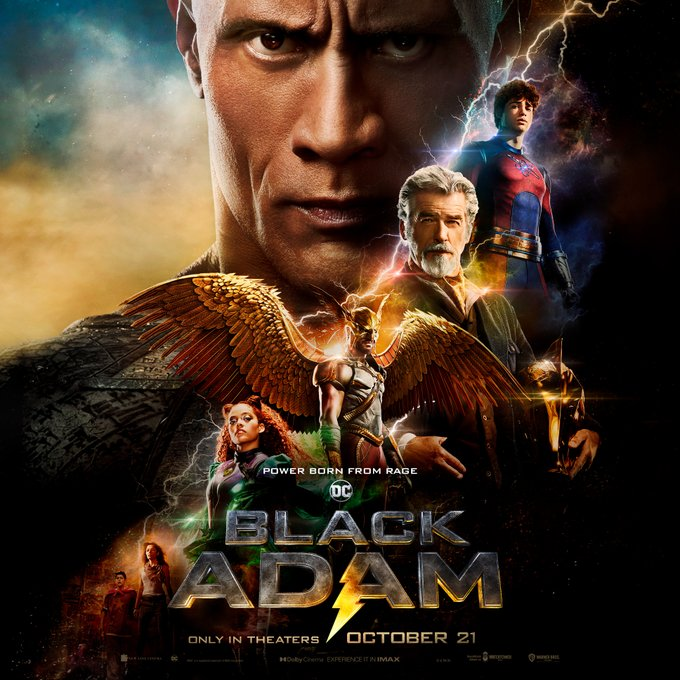

popular Movies
Black Adam (2022)
Barbarian (2022)
he Good Nurse (2022)
All Quiet on the Western Front (2022)
The Stranger (2022)

Black Adam (2022)
1.Language=english,hindi,tamil
2.Title=Black Adam
3.overiew=In ancient Kahndaq, Teth Adam was bestowed the almighty powers of the gods. After using these powers for vengeance, he was imprisoned, becoming Black Adam. Nearly 5,000 years have passed, and Black Adam has gone from man to myth to legend. Now free, his unique form of justice, born out of rage, is challenged by modern-day heroes who form the Justice Society: Hawkman, Dr. Fate, Atom Smasher and Cyclone..
4.popularity=the most highly paid actor the rock is the main character
5.Genres=Action,Superhero
6.realese date=20 October 2022 2022
7.origin_country=America
8.Budget=$200million
9.Revenue=$20 billion
10.visit here for more info=https://www.blackadammovie.net/
.jpeg)
Barbarian (2022)
1.Language=english,hindi,tamil
2.Title=Barbarian
3.overiew=A young woman discovers the rental home she booked is already occupied by a stranger. Against her better judgment, she decides to spend the night but soon discovers there's a lot more to fear than just an unexpected house guest.
4.popularity=the most highly paid actor the rock is the main character
5.Genres=mystery,horror
6.realese date=9 September 2022
7.origin_country=America
8.Budget=$200million
9.Revenue=$20 billion
10.visit here for more info=https://en.wikipedia.org/wiki/Barbarian_(2022_film)
.jpeg)
THe good nurse
1.Language=english,hindi,tamil
2.Title=the good nurse
3.overiew=Nurse Amy Loughren is shocked when Charlie Cullen, one of her colleagues, is foound responsible for the murder of dozens of patients over a period of sixteen years, across two states and nine hospitals, without being charged.
4.popularity=the most highly paid actor the rock is the main character
5.Genres=mystery,drama
6.realese date=11 September 2022
7.origin_country=America
8.Budget=$200million
9.Revenue=$20 billion
10.visit here for more info=https://en.wikipedia.org/wiki/The_Good_Nurse
All Quiet on the Western Front
1.Language=english,hindi,tamil
2.Title=All Quiet on the Western Front
3.overiew=An antiwar novel set during World War I, it relies on Remarque's personal experience in the war to depict the era's broader disillusionment..
4.popularity=the most highly paid actor the rock is the main character
5.Genres=history,war,documentry
6.realese date=29 September 2022
7.origin_country=America
8.Budget=$20million
9.Revenue=$0 billion
10.visit here for more info=https://en.wikipedia.org/wiki/All Quiet on the Western Front